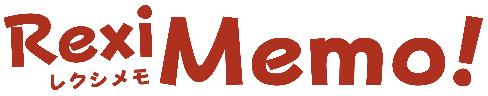

|
 DO NOT CONNECT WITH AN EMULATOR!Due to the nature of how RexiMemo! uses the Sudomemo DNS, any user who connects to RexiMemo! via an emulator (even with a DSi firmware + NAND dump) will have their IP banned from Sudomemo. This is because connecting to Sudomemo via an emulator is against their Terms of Use. I apologise for making the mistake of stating that it is safe to connect to RexiMemo! safely via an emulator. Anybody who has been banned from Sudomemo due to my mistake should join the Sudomemo Discord Server and speak to a Sudomemo staff member immediately. |